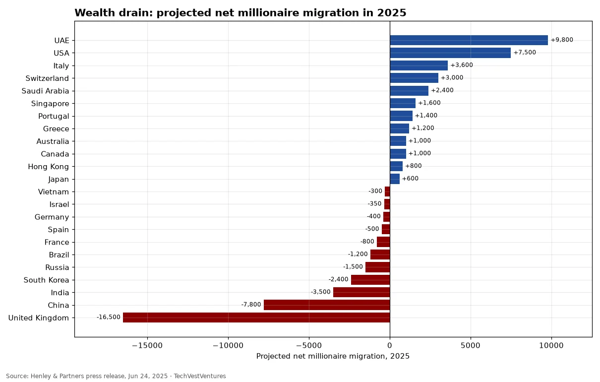

Q3. Millionaire Flows
Weekly Focus graphs, started Oct 25, 2026: new charts are added each week from primary or clearly named secondary data. Each caption names its sources and its caveats.

Henley & Partners / New World Wealth projected a record 142,000 millionaires relocating in 2025. The UK was forecast to lose a net 16,500 (after 10,800 in 2024), the biggest outflow of any country, ahead of China (-7,800) and India (-3,500), while the UAE (+9,800) and USA (+7,500) led inflows; France, Spain and Germany were also projected net losers. Strong caveat: these are commercial projections from a firm that sells residence and citizenship programmes, and critics dispute both method and scale (the counts rely on tracking wealthy individuals' stated residences, not tax or border records). Henley's 2026 report dropped country flow forecasts, which removes the follow-up check. Shown here as a claim, not a measured flow.